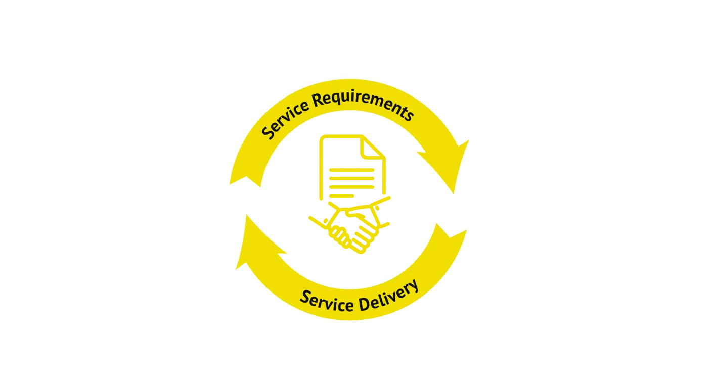

Future-Proof Your Data Center Journey with Our SLA
Covering data center management elements such as uptime guarantees, power redundancy, temperature control,
and network availability, our data center SLA ensures a transparent framework for performance metrics and
issue resolution. Its purpose is to establish clear standards, define responsibilities, and provide a
mechanism for accountability in the event of unmet commitments. It delineates the terms of service
comprehensively, safeguarding you against disruptions while fostering trust and confidence. Ultimately, our
dara center SLA contributes to the seamless and reliable functioning of your data center environment and
provides you best data center hosting services.
